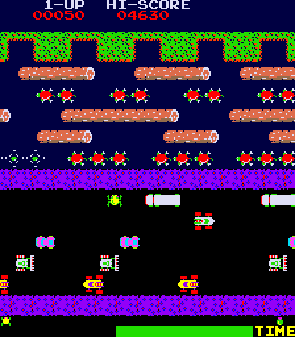
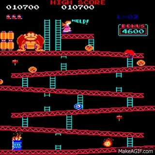
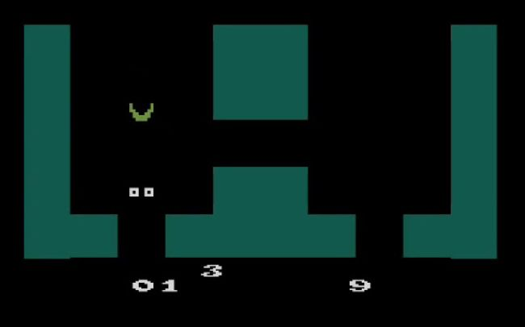

>
Este año se lanza en arcade el mítico Frogger de Konami, que consiste en
guiar una rana hasta su hogar evitando coches mientras cruza una carretera
congestionada y luego un río lleno de riesgos.
<

>
Nace Donkey Kong de las manos de Shigeru Miyamoto. En el juego podíamos encontrar
un fontanero que se llamaba Jumpman (más adelante lo conoceremos como Mario).
Será la primera vez donde podamos ver a este carismático personaje.
El objetivo del juego es rescatar a su novia de las garras de un gorila llamado
Donkey Kong.
<

>
Pese a que el género no tomó verdadera forma hasta los años 90, fue en este año
cuando hizo su aparición el que podría ser el primer videojuego del género
Survival Horror, Haunted House.
En esta aventura, para Atari 2600, el jugador era representado como un par de
ojos y debía recorrer una vieja mansión con el objetivo de encontrar las piezas
de una urna, evitando a las diversas criaturas que habitaban allí,
para después volver al principio y abandonar el edificio. A partir del segundo nivel,
todo estará a oscuras teniendo que buscar las puertas y paredes al tacto,
recreando así el miedo.
<